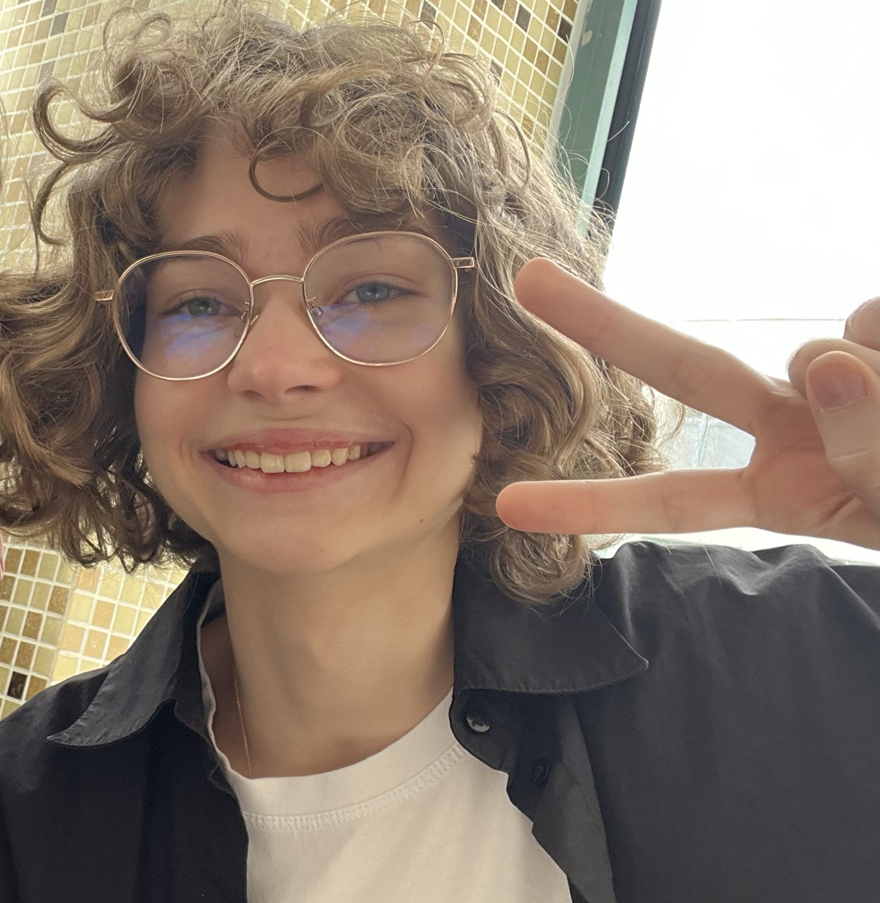
Я учусь на ФиКЛе в 262-ой академической группе, изучаю китайский язык. Раннее обучалась в школе №1573. С 9 класса мечтала сюда поступить, и вот я здесь.
Здесь вы можете немного узнать о моих увлечениях, получить ссылку на мой GitHub и просто хорошо провести время :)
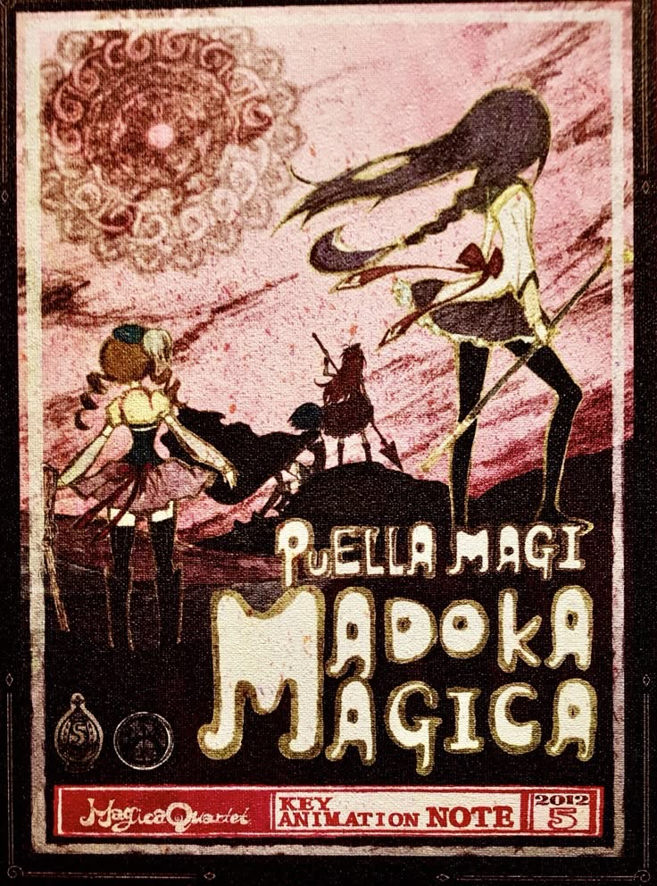
Madoca Magica
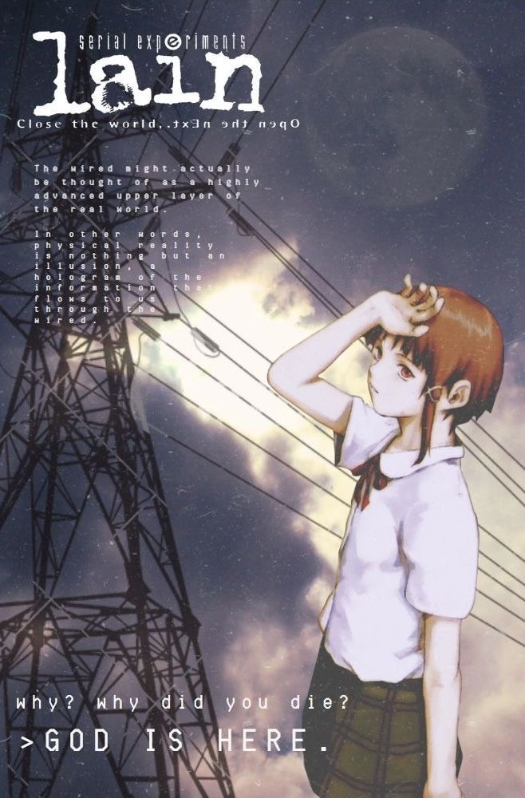
Serial experiments Lain
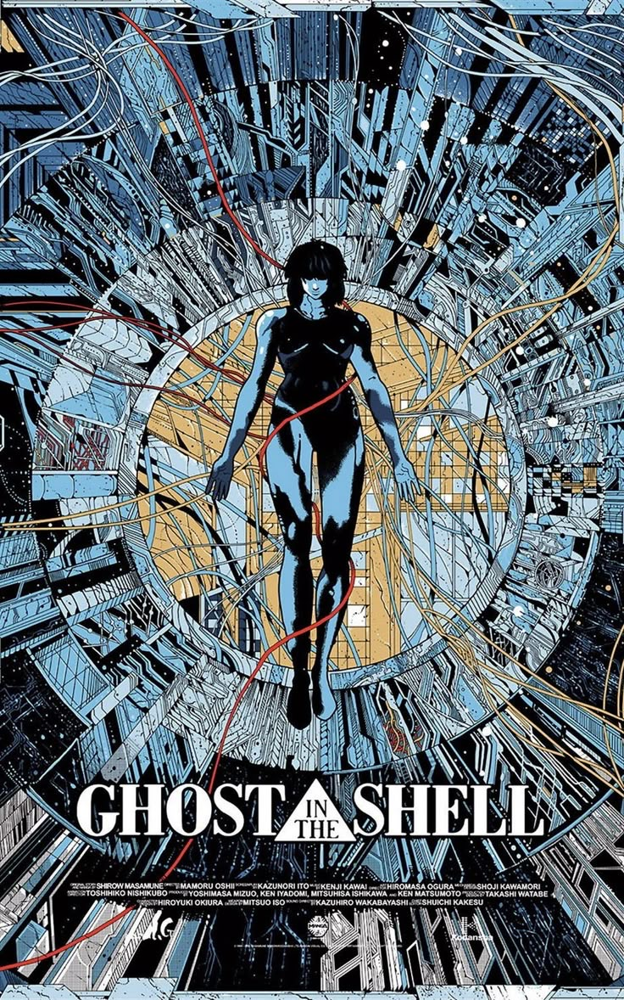
Ghost in the shell
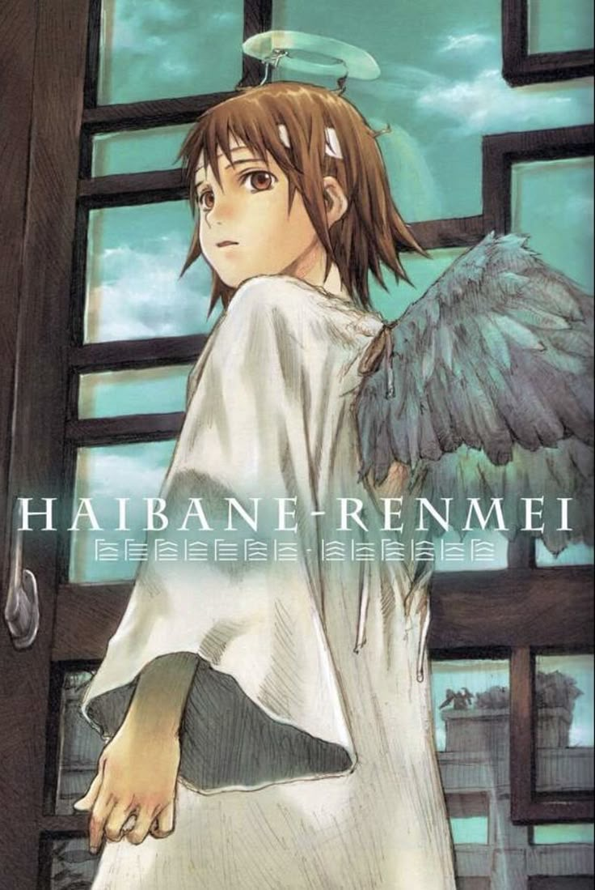
Haibane Renmei
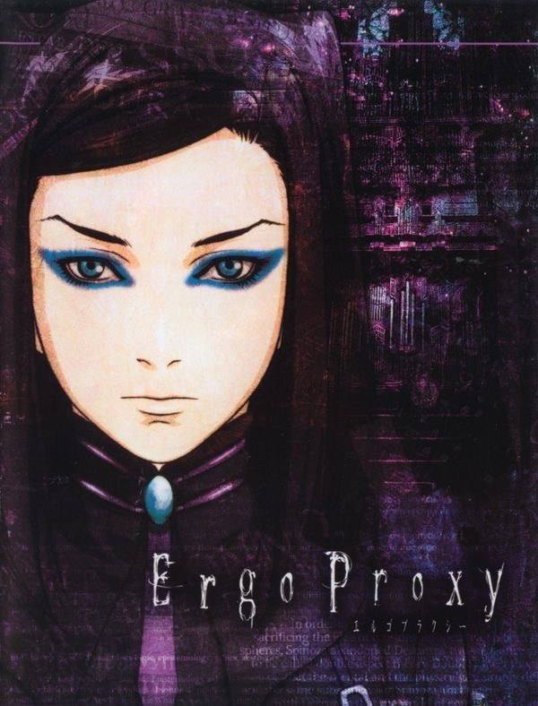
Ergo Proxy
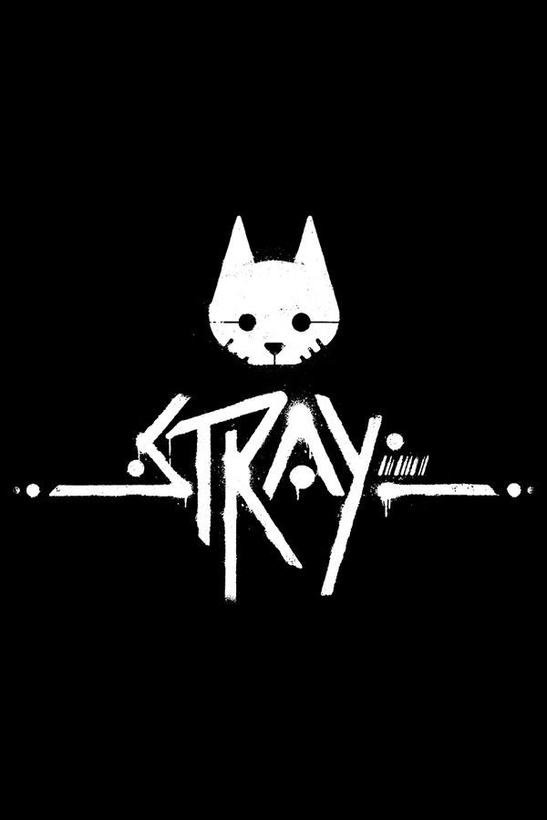
Stray
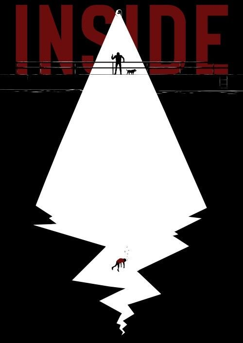
Inside
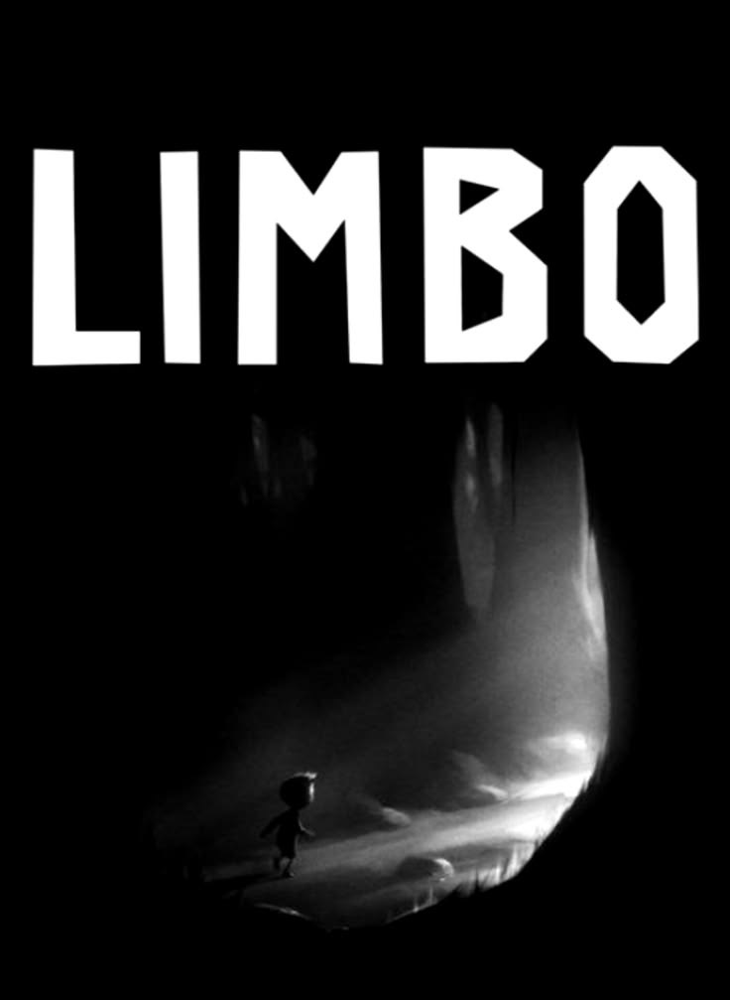
Limbo
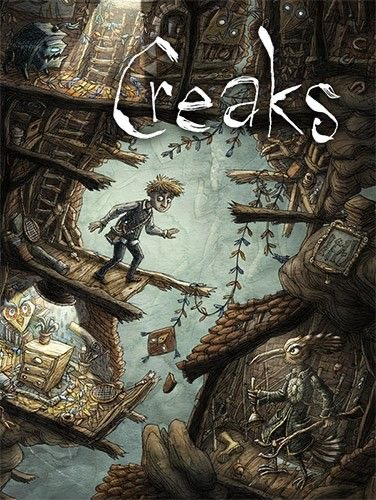
Creaks
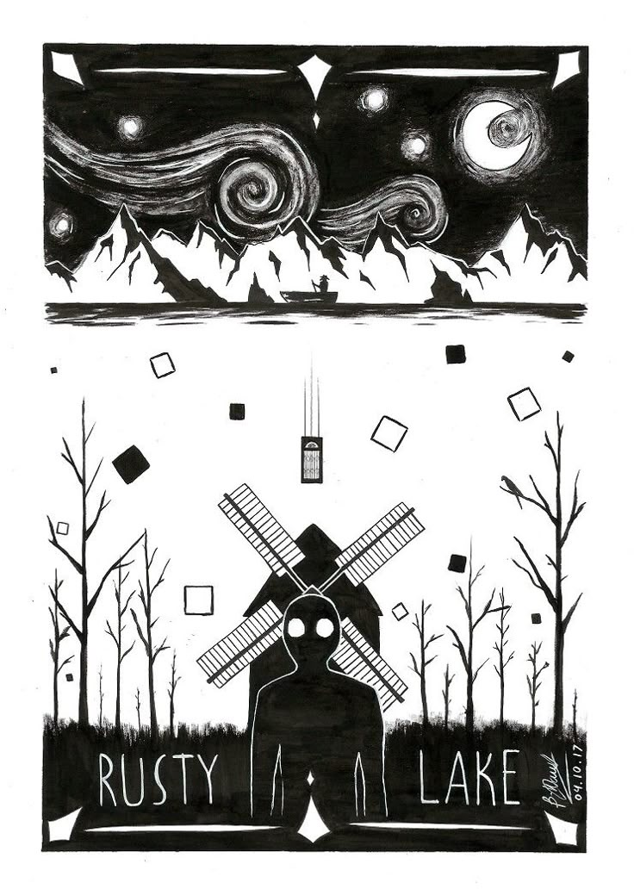
Rusty Lake